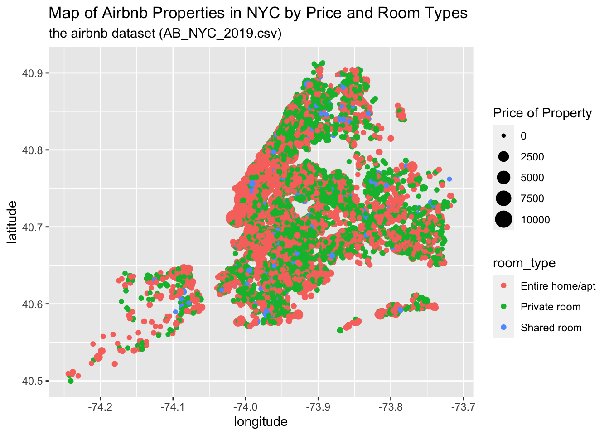
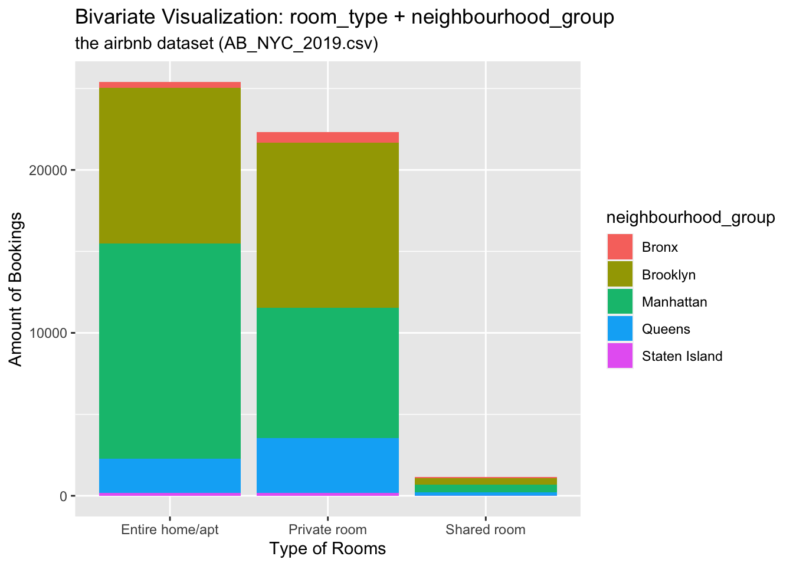

library(tidyverse)
library(ggplot2)
library(here)
knitr::opts_chunk$set(echo = TRUE, warning=FALSE, message=FALSE)Challenge 6 Instructions
challenge_6
hotel_bookings
air_bnb
fed_rate
debt
usa_households
abc_poll
Visualizing Time and Relationships
Challenge Overview
Today’s challenge is to:
- read in a data set, and describe the data set using both words and any supporting information (e.g., tables, etc)
- tidy data (as needed, including sanity checks)
- mutate variables as needed (including sanity checks)
- create at least one graph including time (evolution)
- try to make them “publication” ready (optional)
- Explain why you choose the specific graph type
- Create at least one graph depicting part-whole or flow relationships
- try to make them “publication” ready (optional)
- Explain why you choose the specific graph type
R Graph Gallery is a good starting point for thinking about what information is conveyed in standard graph types, and includes example R code.
(be sure to only include the category tags for the data you use!)
Read in data
Read in one (or more) of the following datasets, using the correct R package and command.
- debt ⭐
- fed_rate ⭐⭐
- abc_poll ⭐⭐⭐
- usa_hh ⭐⭐⭐
- hotel_bookings ⭐⭐⭐⭐
- AB_NYC ⭐⭐⭐⭐⭐
airb <- here("posts","_data","AB_NYC_2019.csv") %>%
read_csv()
# ordering the coloumns
ab_subset<-subset(airb, select = c(1:11))
ab_subset<-ab_subset[,c(3,4, 9,10, 1:2, 5:8, 11)]
ab_subset# A tibble: 48,895 × 11
host_id host_name room_…¹ price id name neigh…² neigh…³ latit…⁴ longi…⁵
<dbl> <chr> <chr> <dbl> <dbl> <chr> <chr> <chr> <dbl> <dbl>
1 2787 John Privat… 149 2539 Clea… Brookl… Kensin… 40.6 -74.0
2 2845 Jennifer Entire… 225 2595 Skyl… Manhat… Midtown 40.8 -74.0
3 4632 Elisabeth Privat… 150 3647 THE … Manhat… Harlem 40.8 -73.9
4 4869 LisaRoxanne Entire… 89 3831 Cozy… Brookl… Clinto… 40.7 -74.0
5 7192 Laura Entire… 80 5022 Enti… Manhat… East H… 40.8 -73.9
6 7322 Chris Entire… 200 5099 Larg… Manhat… Murray… 40.7 -74.0
7 7356 Garon Privat… 60 5121 Blis… Brookl… Bedfor… 40.7 -74.0
8 8967 Shunichi Privat… 79 5178 Larg… Manhat… Hell's… 40.8 -74.0
9 7490 MaryEllen Privat… 79 5203 Cozy… Manhat… Upper … 40.8 -74.0
10 7549 Ben Entire… 150 5238 Cute… Manhat… Chinat… 40.7 -74.0
# … with 48,885 more rows, 1 more variable: minimum_nights <dbl>, and
# abbreviated variable names ¹room_type, ²neighbourhood_group,
# ³neighbourhood, ⁴latitude, ⁵longitudeBriefly describe the data
AB_NYC_2019.csv dataset contains geolocations about houses to be rented in by Airbnb. To visualize this properties, let plot a map using the latitud and longitud, and other important properties such as the price property and room price.
Tidy Data (as needed)
Is your data already tidy, or is there work to be done? Be sure to anticipate your end result to provide a sanity check, and document your work here.
ggplot(ab_subset, aes(longitude, latitude, size = price, color = room_type), group = neighbourhood_group) +
geom_point() +
labs (size = "Price of Property",
title = "Map of Airbnb Properties in NYC by Price and Room Types",
subtitle = "the airbnb dataset (AB_NYC_2019.csv)")
Are there any variables that require mutation to be usable in your analysis stream? For example, do you need to calculate new values in order to graph them? Can string values be represented numerically? Do you need to turn any variables into factors and reorder for ease of graphics and visualization?
Document your work here. It was necessary to reorder the columns to have a better understanding of the raw data, and check what plot would be interesting to show.
Time Dependent Visualization
Let’s draw a part-whole relationship by showing different neighbourhood_groups within the sum of bookings of a specific type of room
Visualizing Part-Whole Relationships
## Bivariate Visualization(s)
ggplot(ab_subset, aes(x=room_type, fill=neighbourhood_group)) + # setting x-axis as the room_type variable; #filling each room type by a second variable, the neighbourdhood group the property locates in
geom_bar( ) +
labs(
x = "Type of Rooms",
y = "Amount of Bookings",
colour = "Neighborhood Group",
title = "Bivariate Visualization: room_type + neighbourhood_group",
subtitle = "the airbnb dataset (AB_NYC_2019.csv)"
)